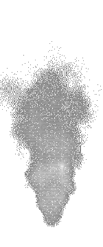

Servus
Reset Verbindungen
Automatisch verbinden
Klicke ein Pad an (+ oder -) und dann das passende LED-Pad (+ oder -), um eine Leitung zu legen. VORSICHT: falsche Verbindungen können die Leiterplatte beschädigen.
Leg Los!

HTBLuVA-Salzburg / El & TInf